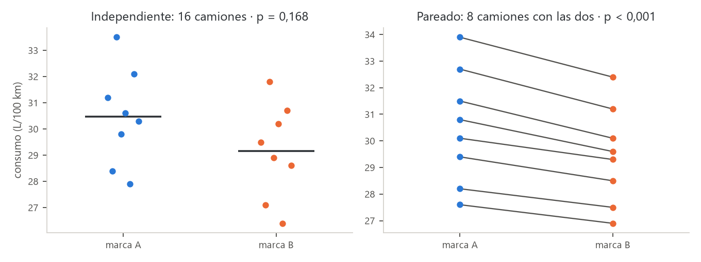
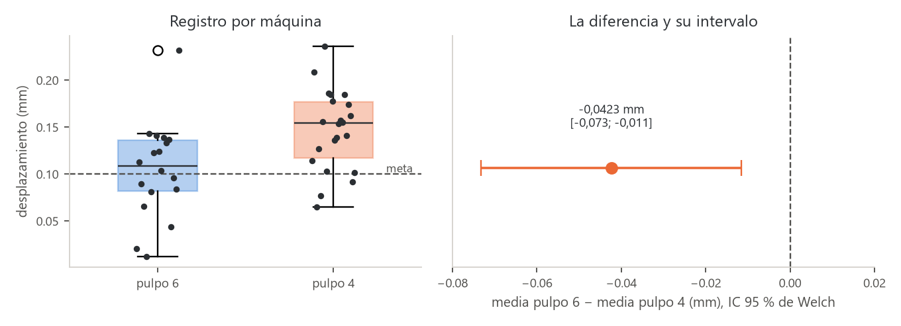

![Camilo Merino]()
Unidad 2 · Comparar dos medias
Qué vas a poder hacer. Reconocer si dos muestras son independientes o pareadas por cómo se
tomaron; comparar sus medias con la \(t\) combinada, con la de Welch (y sus grados de libertad de
Satterthwaite) o con la \(t\) pareada; revisar los supuestos y cambiar a una prueba de rangos cuando
fallan; y medir cuánto importa la diferencia con su intervalo y la \(d\) de Cohen, a mano y con scipy.
Lo que necesitas antes. La unidad 1: los cinco pasos de una prueba, el valor p, la región de rechazo, los errores tipo I y II y la relación con el intervalo de confianza. La prueba \(t\) de una media es la pieza que aquí se usa dos veces.
Tiempo. Unas 6 horas: 2,5 de lectura con el ejemplo y el cuaderno, 3,5 de práctica.
1. La idea · el diseño decide la prueba
Casi toda decisión de ingeniería compara dos cosas: dos máquinas, dos proveedores, antes y después de un cambio. La pregunta es siempre la misma (¿la diferencia entre las medias es real o es ruido?), pero la cuenta depende de cómo se tomaron los datos:
| Diseño | Cómo se reconoce | Ejemplo | Prueba |
|---|---|---|---|
| Independiente | cada unidad aparece en un solo grupo; los grupos pueden tener distinto tamaño | 8 camiones con la marca A y otros 8 con la B | \(t\) combinada o de Welch |
| Pareado | cada unidad aparece en los dos grupos, o hay parejas naturales; los grupos tienen el mismo tamaño y un orden que no se puede barajar | los mismos 8 camiones, un mes con cada marca | \(t\) pareada sobre las diferencias |
La señal práctica: si se puede reordenar una columna sin perder información, son independientes. Si la fila 3 de un grupo «va con» la fila 3 del otro, son pareadas.
Por qué importa. En el diseño pareado cada unidad se compara consigo misma, así que todo lo que hace distinta a una unidad de otra (la ruta del camión, la habilidad del operario, la pieza medida) se cancela. Lo que queda es el efecto del tratamiento. Por eso, cuando se puede, parear es la forma más barata de ganar precisión.
2. Muestras independientes con varianzas iguales · \(t\) combinada
Dos muestras independientes de tamaños \(n_1\) y \(n_2\), medias \(\bar x_1\), \(\bar x_2\) y varianzas \(s_1^2\), \(s_2^2\). Se prueba \(H_0: \mu_1 - \mu_2 = D_0\) (casi siempre \(D_0 = 0\)).
Si las dos poblaciones tienen la misma varianza, las dos muestras estiman un solo \(\sigma^2\), y se juntan en la varianza combinada, un promedio de las varianzas ponderado por sus grados de libertad:
\[s_p^2 = \frac{(n_1 - 1)s_1^2 + (n_2 - 1)s_2^2}{n_1 + n_2 - 2}\]
\[t = \frac{\bar x_1 - \bar x_2 - D_0}{s_p\sqrt{\dfrac{1}{n_1} + \dfrac{1}{n_2}}} \quad\sim\quad t_{\,n_1 + n_2 - 2} \text{ bajo } H_0\]
La intuición. La diferencia de medias varía menos cuanto más datos hay en cada grupo: su varianza es \(\sigma^2/n_1 + \sigma^2/n_2\). El estadístico mide a cuántos errores estándar quedó la diferencia observada de la que dice \(H_0\). Se pierden dos grados de libertad porque se estimaron dos medias.
El intervalo de confianza para \(\mu_1 - \mu_2\) usa la misma cuenta: \((\bar x_1 - \bar x_2) \pm t_{1-\alpha/2,\, n_1+n_2-2}\; s_p\sqrt{1/n_1 + 1/n_2}\).
3. Varianzas distintas · Welch y los grados de libertad de Satterthwaite
Si las varianzas no son iguales, juntarlas no tiene sentido. Welch usa cada varianza por separado:
\[t = \frac{\bar x_1 - \bar x_2 - D_0}{\sqrt{\dfrac{s_1^2}{n_1} + \dfrac{s_2^2}{n_2}}} \qquad \nu = \frac{\left(\dfrac{s_1^2}{n_1} + \dfrac{s_2^2}{n_2}\right)^2}{\dfrac{(s_1^2/n_1)^2}{n_1 - 1} + \dfrac{(s_2^2/n_2)^2}{n_2 - 1}}\]
El estadístico ya no sigue exactamente una \(t\), pero se aproxima muy bien con una \(t\) de \(\nu\)
grados de libertad (la aproximación de Satterthwaite). \(\nu\) casi nunca es entero; con tabla se
redondea hacia abajo (más conservador); scipy usa el valor decimal.
La intuición de \(\nu\). Cuando un grupo es chico y muy variable, casi todo el error estándar viene de él, y la prueba tiene tan pocos grados de libertad como ese grupo. Cuando los dos aportan parecido, \(\nu\) se acerca a \(n_1 + n_2 - 2\).
¿Cuál usar? Hay tres hechos que ordenan la decisión:
- Con \(n_1 = n_2\), las dos dan el mismo \(t\) (el error estándar coincide); solo cambian los grados de libertad, y poco.
- Con tamaños distintos y varianzas distintas, la combinada se equivoca: si el grupo chico es el más variable, rechaza mucho más que el \(\alpha\) prometido (ejercicio 2.10).
- Welch casi no pierde potencia cuando las varianzas sí son iguales.
Por eso la recomendación moderna es usar Welch por defecto y reservar la combinada para cuando la igualdad de varianzas es razonable por diseño (mismo proceso, mismo instrumento). Comparar las varianzas con una prueba formal antes de elegir (la prueba \(F\) o la de Levene de la unidad 3) se enseña a menudo, pero encadenar dos pruebas altera los niveles de error; una regla práctica es mirar la razón de desviaciones: si la mayor supera el doble de la menor, Welch sin discusión.
4. Muestras pareadas · \(t\) sobre las diferencias
Con \(n\) pares \((x_i, y_i)\) se calculan las diferencias \(d_i = x_i - y_i\) y se hace la prueba \(t\) de una media sobre ellas, con \(H_0: \mu_D = D_0\):
\[t = \frac{\bar d - D_0}{s_d/\sqrt n} \quad\sim\quad t_{\,n-1}\]
Por qué gana tanto. La varianza de una diferencia es
\[\operatorname{Var}(X - Y) = \sigma_X^2 + \sigma_Y^2 - 2\rho\,\sigma_X\sigma_Y\]
Si las dos mediciones de una misma unidad están correlacionadas (\(\rho\) alto, porque un camión que gasta mucho gasta mucho con cualquier neumático), el término \(-2\rho\sigma_X\sigma_Y\) se come casi toda la varianza. Tratar datos pareados como independientes ignora ese término y usa un error estándar muchas veces mayor que el real: la diferencia desaparece en el ruido.
El supuesto se revisa en las diferencias: tienen que ser aproximadamente normales e independientes entre pares. No hace falta que \(x\) e \(y\) sean normales por separado.
5. Supuestos y qué hacer si fallan
| Supuesto | Cómo se revisa | Si falla |
|---|---|---|
| Independencia (entre unidades, y entre grupos en el diseño independiente) | por el diseño: cómo se eligieron y midieron las unidades | ninguna prueba lo arregla; hay que cambiar el análisis (pareado, por bloques) o el muestreo |
| Normalidad de cada grupo (o de las diferencias) | histograma o gráfico Q–Q; Shapiro–Wilk con \(n\) chico | con \(n \ge 30\) por grupo la \(t\) resiste bien (teorema central del límite); con \(n\) chico y asimetría o datos extremos, prueba de rangos |
| Varianzas iguales (solo la \(t\) combinada) | razón de desviaciones; prueba \(F\) o de Levene (unidad 3) | Welch |
| Sin datos extremos que dominen | diagrama de caja | entender el dato (¿error de registro?, ¿otro proceso?); informar con y sin él; prueba de rangos |
Las pruebas de rangos. Cuando la normalidad falla con muestras chicas:
- Mann–Whitney (también llamada de Wilcoxon de suma de rangos), para muestras independientes. Junta los datos, los ordena y pregunta si los rangos de un grupo tienden a ser más altos. Un dato extremo cuenta solo como «el más grande», sin importar cuánto.
- Wilcoxon de rangos con signo, para muestras pareadas, sobre las diferencias.
No comparan medias sino la tendencia de un grupo a dar valores mayores (con distribuciones de igual forma, las medianas). Pierden algo de potencia cuando los datos sí son normales, y ganan mucha cuando no lo son. Esta unidad solo las menciona; se usan en los ejercicios 2.9 y en el caso.
6. Tamaño del efecto · la \(d\) de Cohen
El valor p dice si la diferencia es distinguible del ruido; no dice si importa. Para eso, la diferencia en sus unidades (con su intervalo) y, para comparar entre estudios, la \(d\) de Cohen: la diferencia medida en desviaciones estándar.
\[d = \frac{\bar x_1 - \bar x_2}{s_p} \qquad \text{(pareado: } d_z = \bar d / s_d\text{)}\]
Una guía de lectura habitual: 0,2 es chico, 0,5 mediano y 0,8 grande. Es solo una guía: en una máquina de precisión un efecto «chico» puede ser carísimo, y en una encuesta uno «grande» puede no cambiar ninguna decisión. Lo que manda es la diferencia en unidades del problema.
\(d\) y \(t\) están ligados: \(t = d \,/\sqrt{1/n_1 + 1/n_2}\). A igual efecto, más datos dan un \(t\) mayor. Por eso con muestras enormes todo es significativo y con muestras chicas efectos grandes no lo son.
7. Muchas pruebas \(t\) no reemplazan un ANOVA
Con más de dos grupos, la tentación es comparar todos los pares con pruebas \(t\). Con \(k\) grupos hay \(k(k-1)/2\) pares, y cada prueba tiene su 5 % de falsa alarma. Si fueran independientes, la probabilidad de al menos una falsa alarma sería \(1 - 0{,}95^{m}\) con \(m\) pruebas: con 15 pruebas, más de la mitad. La salida correcta es el ANOVA (unidad 7) seguido de comparaciones múltiples con el error controlado (unidad 8).
8. Con Python
from scipy import stats
stats.ttest_ind(a, b, equal_var=False) # Welch (equal_var=True: t combinada)
stats.ttest_ind(a, b, equal_var=False).confidence_interval(0.95) # IC de la diferencia
stats.ttest_rel(x, y) # pareada (x e y en el mismo orden de unidades)
stats.mannwhitneyu(a, b) # rangos, independientes
stats.wilcoxon(x, y) # rangos con signo, pareadas
stats.shapiro(a), stats.shapiro(x - y) # normalidad de cada grupo o de las diferencias
alternative="less" o "greater" da la prueba de una cola, en la dirección de \(a - b\).
9. Ejemplo resuelto · ¿qué neumático gasta menos combustible?
Una empresa de reparto de Puerto Montt evalúa dos marcas de neumático por su efecto en el consumo
(L/100 km). Los datos quedan en datos/u02_neumaticos.csv y el cuaderno
notebooks/u02_dos_medias.ipynb reproduce todo.
Primer intento · diseño independiente
Se montó la marca A en 8 camiones y la B en otros 8, y se midió el consumo de un mes.
| Camión | Marca A | Marca B |
|---|---|---|
| 1 | 31,2 | 29,5 |
| 2 | 28,4 | 27,1 |
| 3 | 33,5 | 31,8 |
| 4 | 29,8 | 28,9 |
| 5 | 30,6 | 30,2 |
| 6 | 27,9 | 26,4 |
| 7 | 32,1 | 30,7 |
| 8 | 30,3 | 28,6 |
(Las filas no se corresponden: el camión 1 de la marca A no es el camión 1 de la B. La tabla está lado a lado solo por espacio.)
Paso 0 · Supuestos. Camiones distintos en cada grupo: independientes. Shapiro–Wilk da \(p = 0{,}954\) (A) y \(p = 0{,}952\) (B). Las desviaciones son casi iguales.
Paso 1 · Pregunta. ¿Las dos marcas dan distinto consumo medio?
Paso 2 · Hipótesis. \(H_0: \mu_A = \mu_B\) contra \(H_1: \mu_A \ne \mu_B\), con \(\alpha = 0{,}05\).
Paso 3 · Estadístico. \(\bar x_A = 30{,}475\), \(s_A^2 = 3{,}3936\); \(\bar x_B = 29{,}150\), \(s_B^2 = 3{,}2543\).
\[s_p^2 = \frac{7 \cdot 3{,}3936 + 7 \cdot 3{,}2543}{14} = 3{,}3239 \qquad s_p = 1{,}8232 \qquad \text{EE} = 1{,}8232\sqrt{\tfrac18 + \tfrac18} = 0{,}9116\]
\[t = \frac{30{,}475 - 29{,}150}{0{,}9116} = 1{,}45 \qquad \text{con } 14 \text{ gl}\]
Con Welch: \(s_A^2/8 = 0{,}4242\) y \(s_B^2/8 = 0{,}4068\); el error estándar es el mismo, 0,9116, porque los grupos tienen igual tamaño, y \(\nu = 14{,}0\).
Paso 4 · Decisión. El crítico es \(t_{0{,}975;\,14} = 2{,}145\). El observado no llega: \(p = 0{,}1681\) por las dos pruebas.
Paso 5 · Conclusión. Con 16 camiones no hay evidencia de que las marcas den distinto consumo. El IC 95 % de la diferencia va de \(-0{,}63\) a \(3{,}28\) L/100 km: podría no haber diferencia, o la marca A podría gastar 3 litros más cada 100 km. El estudio no decide. Y el efecto estimado no es chico: \(d = 0{,}73\).
Segundo intento · diseño pareado
El jefe de flota nota que los camiones son muy distintos entre sí (unos hacen ruta de cerro, otros de ciudad), y que eso tapa el efecto del neumático. Repite el ensayo con 8 camiones que usan una marca un mes y la otra el mes siguiente (sorteando cuál va primero).
| Camión | Marca A | Marca B | \(d = A - B\) |
|---|---|---|---|
| 1 | 30,8 | 29,6 | 1,2 |
| 2 | 27,6 | 26,9 | 0,7 |
| 3 | 33,9 | 32,4 | 1,5 |
| 4 | 29,4 | 28,5 | 0,9 |
| 5 | 31,5 | 30,1 | 1,4 |
| 6 | 28,2 | 27,5 | 0,7 |
| 7 | 32,7 | 31,2 | 1,5 |
| 8 | 30,1 | 29,3 | 0,8 |
Supuestos. Shapiro–Wilk sobre las diferencias: \(p = 0{,}094\), sin evidencia fuerte contra la normalidad (con 8 datos, conviene mirar también el gráfico).
Hipótesis. \(H_0: \mu_D = 0\) contra \(H_1: \mu_D \ne 0\).
\[\bar d = 1{,}0875 \qquad s_d = 0{,}3523 \qquad \frac{s_d}{\sqrt 8} = 0{,}1246 \qquad t = \frac{1{,}0875}{0{,}1246} = 8{,}73 \text{ con 7 gl}\]
\(p < 0{,}001\). El IC 95 % de la diferencia media va de 0,79 a 1,38 L/100 km, y \(d_z = 3{,}09\).
Conclusión. La marca B gasta en promedio entre 0,8 y 1,4 L menos cada 100 km que la A.

El error de analizarlo mal. Si estos mismos datos pareados se analizaran como dos muestras independientes, Welch daría \(t = 1{,}09\) y \(p = 0{,}2956\): ninguna diferencia. La correlación entre las dos mediciones de un mismo camión es 0,998; la prueba independiente la ignora y usa como ruido las diferencias entre camiones, que son de varios litros.
df = pd.read_csv("datos/u02_neumaticos.csv")
par = df[df.diseno == "pareado"].pivot(index="camion", columns="marca", values="consumo_l100km")
stats.ttest_rel(par.A, par.B) # t = 8,73, p < 0,001
stats.ttest_ind(par.A, par.B, equal_var=False) # mal: t = 1,09, p = 0,2956
Cómo se lee.
- El primer estudio no estaba equivocado: era poco potente para una diferencia de un litro cuando los camiones difieren entre sí en cinco.
- Con 30.000 km al año por camión, un litro menos cada 100 km son unos 300 litros por camión al año. Esa es la cifra que va a la decisión de compra, no el valor p.
- La lección de diseño: antes de juntar datos, preguntarse si se puede parear.
10. Errores típicos
| Error | Cómo evitarlo |
|---|---|
| Tratar datos pareados como independientes | Si cada fila de un grupo «va con» una del otro, prueba pareada sobre las diferencias |
| Parear datos independientes (ordenar las dos columnas y restar) | Solo se parea lo que el diseño pareó; inventar parejas da un error estándar falso |
| \(t\) combinada con varianzas muy distintas y tamaños distintos | Welch por defecto; la combinada solo si la igualdad es razonable |
| «No se rechaza, entonces las medias son iguales» (por ejemplo, para homologar dos materiales) | No rechazar no prueba igualdad. Para mostrar equivalencia se fija un margen aceptable y se exige que todo el intervalo caiga dentro (prueba de equivalencia) |
| Significativo = importante | Informa la diferencia con su intervalo y la \(d\); decide con el efecto en unidades del problema |
| Muchas pruebas \(t\) en vez de un ANOVA | Con más de dos grupos, ANOVA y comparaciones múltiples (unidades 7 y 8) |
| Calcular \(s_p\) promediando desviaciones, o sin ponderar por \(n - 1\) | \(s_p^2\) pondera las varianzas por sus grados de libertad |
| Redondear los gl de Welch hacia arriba al usar la tabla | Hacia abajo: es el lado conservador |
| Mirar el valor p y no los supuestos | Diagrama de caja de cada grupo antes de la prueba; un dato extremo puede dar vuelta la conclusión (ejercicio 2.9) |
11. Práctica
Diez ejercicios: 2.1 a 2.4 básicos, 2.5 a 2.8 intermedios, 2.9 y 2.10 de desafío. Las pautas están en la sección 12. Usa \(\alpha = 0{,}05\) salvo que se indique otro.
2.1 · ¿Independientes o pareadas? (básico). Para cada estudio di el diseño, las hipótesis y la prueba.
- (a) Se mide el tiempo de armado de 10 operarios antes y después de una capacitación.
- (b) Se ensaya la resistencia de probetas de cemento de dos proveedores.
- (c) Se mide la dureza de las mismas 12 piezas con dos durómetros, para ver si uno marca más alto.
- (d) Se comparan las ventas de 15 sucursales con una campaña y de 15 sucursales sin ella.
2.2 · Dos moldes de inyección (básico). El tiempo de ciclo de un molde nuevo se compara con el del actual en la misma inyectora. Molde actual: \(n_1 = 14\), \(\bar x_1 = 38{,}6\) s, \(s_1 = 2{,}1\) s. Molde nuevo: \(n_2 = 12\), \(\bar x_2 = 36{,}9\) s, \(s_2 = 1{,}8\) s. Suponiendo varianzas iguales, ¿los tiempos medios difieren? Da \(s_p\), \(t\), el valor crítico, el valor p, el IC 95 % y \(d\).
2.3 · Dos contratistas (básico). Horas de reparación de equipos: contratista 1, \(n_1 = 10\), \(\bar x_1 = 6{,}8\) h, \(s_1 = 3{,}4\) h; contratista 2, \(n_2 = 16\), \(\bar x_2 = 4{,}9\) h, \(s_2 = 1{,}2\) h. (a) ¿Por qué no conviene la \(t\) combinada? (b) Haz la prueba de Welch de dos colas, con los grados de libertad de Satterthwaite. (c) Compara con lo que habría dado la combinada.
2.4 · Reorganizar una estación (básico). Piezas por hora de 8 operarios antes y después de reorganizar su estación de trabajo. ¿La reorganización sube la productividad media?
| Operario | 1 | 2 | 3 | 4 | 5 | 6 | 7 | 8 |
|---|---|---|---|---|---|---|---|---|
| Antes | 42 | 38 | 45 | 40 | 36 | 44 | 39 | 41 |
| Después | 45 | 40 | 47 | 41 | 40 | 46 | 39 | 44 |
2.5 · Aditivos para mortero (intermedio). Tiempo de fraguado (min) de probetas de mortero con dos aditivos:
| Aditivo | 1 | 2 | 3 | 4 | 5 | 6 | 7 | 8 | 9 |
|---|---|---|---|---|---|---|---|---|---|
| A | 42 | 47 | 39 | 45 | 50 | 44 | 41 | 48 | 46 |
| Aditivo | 1 | 2 | 3 | 4 | 5 | 6 | 7 | 8 | 9 | 10 | 11 |
|---|---|---|---|---|---|---|---|---|---|---|---|
| B | 38 | 41 | 36 | 44 | 39 | 35 | 42 | 40 | 37 | 43 | 39 |
(a) Revisa normalidad y compara las desviaciones. (b) Haz Welch y la combinada. (c) Calcula \(d\) y el IC 95 % de la diferencia (Welch). (d) Concluye para la obra.
2.6 · ¿Ahorra más de 5 minutos? (intermedio). Un proveedor de software asegura que su sistema reduce el tiempo de despacho de un pedido en más de 5 minutos. Con el sistema antiguo: \(n_1 = 25\), \(\bar x_1 = 48{,}2\) min, \(s_1 = 6{,}5\); con el nuevo (en otros pedidos): \(n_2 = 22\), \(\bar x_2 = 41{,}0\) min, \(s_2 = 5{,}9\). (a) Plantea las hipótesis con \(D_0 = 5\) y pruébalas con Welch. (b) Calcula la cota inferior de una cola (95 %) para la reducción. (c) ¿Qué habría dicho la prueba con \(D_0 = 0\)? ¿Qué le contestas al proveedor?
2.7 · Dos instrumentos, las mismas piezas (intermedio). Se mide el espesor de recubrimiento (µm) de 7 piezas con dos instrumentos:
| Pieza | Instrumento 1 | Instrumento 2 | Diferencia |
|---|---|---|---|
| 1 | 52,1 | 53,0 | -0,9 |
| 2 | 48,7 | 49,9 | -1,2 |
| 3 | 55,3 | 56,1 | -0,8 |
| 4 | 50,2 | 51,4 | -1,2 |
| 5 | 46,9 | 47,5 | -0,6 |
| 6 | 53,8 | 55,0 | -1,2 |
| 7 | 49,5 | 50,3 | -0,8 |
(a) Analiza los datos como si fueran independientes (Welch). (b) Analízalos como pareados. (c) Explica la diferencia con la fórmula de \(\operatorname{Var}(X - Y)\). ¿Qué le dices al laboratorio?
2.8 · ¿Cuántas unidades por grupo? (intermedio). Para comparar dos procesos se quiere detectar una diferencia de medias de \(\delta = 1{,}5\) unidades, con \(\sigma = 3\) en cada proceso, \(\alpha = 0{,}05\) de dos colas y potencia 0,80. (a) Calcula \(n\) por grupo con \(n = 2\big((z_{1-\alpha/2} + z_{1-\beta})\,\sigma/\delta\big)^2\). (b) Si solo hay presupuesto para 30 por grupo, ¿qué potencia tiene el estudio? Usa \(1 - \beta \approx \Phi\big(\delta/(\sigma\sqrt{2/n}) - z_{1-\alpha/2}\big)\).
2.9 · Un dato extremo (desafío). Días de entrega de 8 pedidos de cada proveedor:
| Proveedor | 1 | 2 | 3 | 4 | 5 | 6 | 7 | 8 |
|---|---|---|---|---|---|---|---|---|
| A | 4 | 5 | 3 | 6 | 4 | 5 | 4 | 21 |
| B | 7 | 8 | 6 | 9 | 7 | 8 | 7 | 6 |
El pedido de 21 días de A se extravió en una bodega del transportista. (a) Revisa los supuestos. (b) Compara con Welch y con Mann–Whitney. (c) Repite Welch sin el 21. (d) ¿Qué proveedor es más rápido y cómo lo informas?
2.10 · Cuando la \(t\) combinada miente, y cuando sobran pruebas (desafío). (a) Simula con Python
20.000 pares de muestras con medias iguales (\(H_0\) cierta): la primera de \(n_1 = 8\) con \(\sigma_1 = 4\),
la segunda de \(n_2 = 32\) con \(\sigma_2 = 1\) (usa np.random.default_rng(1101)). ¿Qué fracción rechaza al
5 % la \(t\) combinada y qué fracción Welch? Explica por qué. (b) Un laboratorio quiere comparar 6 tintas
de a pares con pruebas \(t\) al 5 %. ¿Cuántas pruebas son? Si fueran independientes, ¿qué probabilidad
hay de al menos una falsa alarma? ¿Qué nivel tendría que usar cada prueba con la corrección de
Bonferroni?
12. Pautas
2.1. (a) Pareado: el mismo operario antes y después; \(H_0: \mu_D = 0\) contra \(H_1: \mu_{antes} - \mu_{después} > 0\) (si se espera que baje el tiempo); \(t\) pareada. (b) Independientes: probetas distintas de cada proveedor; \(H_0: \mu_1 = \mu_2\) contra \(H_1: \mu_1 \ne \mu_2\); Welch. (c) Pareado: las mismas piezas en los dos durómetros; \(H_1: \mu_D \ne 0\); \(t\) pareada (la diferencia entre piezas se cancela). (d) Independientes: sucursales distintas; \(H_1: \mu_{campaña} > \mu_{sin}\); Welch. Si las sucursales se hubieran emparejado por tamaño antes de sortear la campaña, sería pareado.
2.2. \(s_p^2 = (13 \cdot 2{,}1^2 + 11 \cdot 1{,}8^2)/24 = 3{,}8737\), así que \(s_p = 1{,}9682\) s. EE \(= 1{,}9682\sqrt{1/14 + 1/12} = 0{,}7743\) y \(t = 1{,}7/0{,}7743 = 2{,}20\) con 24 gl. El crítico es 2,064: se rechaza; \(p = 0{,}0380\). IC 95 %: de 0,10 a 3,30 s; \(d = 0{,}86\). Lectura: el molde nuevo es más rápido, pero el intervalo va de casi nada a más de 3 segundos por ciclo. Antes de cambiar todos los moldes conviene más ciclos para afinar cuánto se gana.
2.3. (a) La razón de desviaciones es \(3{,}4/1{,}2 = 2{,}83\), sobre 2, y el grupo más variable es el más chico: la combinada sería demasiado optimista. (b) \(s_1^2/n_1 = 1{,}156\) y \(s_2^2/n_2 = 0{,}090\); EE \(= \sqrt{1{,}246} = 1{,}1162\) y \(t = 1{,}9/1{,}1162 = 1{,}70\). Grados de libertad: \(\nu = 1{,}246^2/(1{,}156^2/9 + 0{,}090^2/15) = 10{,}42\), que con tabla se usan como 10: crítico 2,228. No se rechaza; \(p = 0{,}1183\). (c) La combinada habría dado \(t = 2{,}06\) con 24 gl y \(p = 0{,}0504\), casi en el borde. Usa un error estándar que no corresponde: trata la gran variabilidad del contratista 1 como si la compartiera el 2, y cuenta 24 grados de libertad cuando casi toda la incertidumbre viene de 10 reparaciones. Lectura: no hay evidencia firme de que el contratista 1 sea más lento; sí la hay de que es mucho más irregular, y eso también es un costo (unidad 3).
2.4. Diferencias (después menos antes):
| Operario | 1 | 2 | 3 | 4 | 5 | 6 | 7 | 8 |
|---|---|---|---|---|---|---|---|---|
| Diferencia | 3 | 2 | 2 | 1 | 4 | 2 | 0 | 3 |
\(H_0: \mu_D = 0\) contra \(H_1: \mu_D > 0\). \(\bar d = 2{,}125\), \(s_d = 1{,}2464\), EE \(= 0{,}4407\) y \(t = 4{,}82\) con 7 gl, sobre el crítico 1,895; \(p = 0{,}0010\). \(d_z = 1{,}70\). Lectura: la reorganización sube la productividad en unas 2 piezas por hora por operario, y no es un efecto de unos pocos: 7 de 8 mejoraron.
2.5. (a) Shapiro–Wilk: \(p = 0{,}986\) (A) y \(p = 0{,}947\) (B). Varianzas de 12,50 y 8,27: razón de desviaciones de 1,23, parecidas. (b) Medias de 44,67 y 39,45 min. Welch: EE \(= 1{,}4632\), \(t = 3{,}56\), \(\nu = 15{,}4\), \(p = 0{,}0027\). Combinada: \(s_p^2 = 10{,}15\), EE \(= 1{,}4321\), \(t = 3{,}64\) con 18 gl, \(p = 0{,}0019\). Las dos rechazan. (c) \(d = 1{,}64\) (grande). IC 95 % de Welch: de 2,10 a 8,32 min. (d) El aditivo A retarda el fraguado entre 2 y 8 minutos. Si en la obra se necesita más tiempo de colocación (hormigonado en verano), A es mejor; si se necesita desmoldar antes, B.
2.6. (a) \(H_0: \mu_{ant} - \mu_{nue} = 5\) (o \(\le 5\)) contra \(H_1: \mu_{ant} - \mu_{nue} > 5\), porque la promesa es lo que hay que demostrar. EE \(= \sqrt{6{,}5^2/25 + 5{,}9^2/22} = 1{,}8089\), \(t = (7{,}2 - 5)/1{,}8089 = 1{,}22\) con \(\nu = 44{,}9\); \(p = 0{,}1151\). No se rechaza. (b) Cota inferior: \(7{,}2 - t_{0{,}95} \cdot 1{,}8089 = 4{,}16\) min, bajo 5. (c) Con \(D_0 = 0\): \(t = 3{,}98\), \(p < 0{,}001\). Lectura: el sistema sí reduce el tiempo (eso está claro), pero los datos no respaldan que la reducción supere 5 minutos. La promesa del proveedor no está demostrada; puede ser cierta, pero con estos pedidos la reducción plausible parte en unos 4 minutos.
2.7. (a) Como independientes: Welch da \(t = -0{,}60\) y \(p = 0{,}5601\); no se ve nada. (b) Pareadas: \(\bar d = -0{,}957\) µm, \(s_d = 0{,}2440\), \(t = -10{,}38\) con 6 gl y \(p < 0{,}001\). El instrumento 2 marca casi un micrómetro más que el 1 en todas las piezas. (c) La correlación entre las dos mediciones de una misma pieza es 0,997: las piezas difieren entre sí en varios micrómetros, y eso domina \(\sigma_X^2\) y \(\sigma_Y^2\). En la pareada, el término \(-2\rho\sigma_X\sigma_Y\) cancela esa variación y queda solo la diferencia entre instrumentos. Lectura: hay un sesgo sistemático de cerca de 1 µm; el laboratorio debe calibrar uno de los dos antes de seguir usándolos indistintamente.
2.8. (a) \(n = 2\big((1{,}960 + 0{,}842) \cdot 3/1{,}5\big)^2 = 62{,}8\), es decir 63 por grupo (con la
\(t\), statsmodels pide 63,8, es decir 64). (b) Con 30 por grupo: \(\delta/(\sigma\sqrt{2/30}) = 1{,}936\) y la
potencia es \(\Phi(1{,}936 - 1{,}960) = 0{,}491\). Lectura: con 30 por grupo, el estudio se pierde la
diferencia buscada la mitad de las veces. Un resultado «no significativo» con esa muestra no
diría casi nada.
2.9. (a) A tiene un dato extremo: su desviación es 5,93 días contra 1,04 de B, y Shapiro–Wilk rechaza la normalidad de A (\(p < 0{,}001\)). Con 8 datos, la \(t\) no es confiable. (b) Welch: medias de 6,50 y 7,25 días, \(t = -0{,}35\), \(p = 0{,}7343\): no ve diferencia. Mann–Whitney: \(U = 9{,}0\), \(p = 0{,}0170\): A entrega antes. La mediana de A es 4,5 días y la de B, 7,0. (c) Sin el 21: media de A 4,43 días, \(t = -5{,}43\), \(p < 0{,}001\). (d) A es el proveedor más rápido en lo habitual; un solo pedido extraviado basta para tapar eso en la media. Se informa la prueba de rangos y el análisis con y sin el dato, y el 21 no se borra: se informa aparte, porque un pedido extraviado también es parte del servicio de A.
2.10. (a) Con la semilla 1101 y 20.000 simulaciones, la \(t\) combinada rechaza en el 30,3 % de los casos y Welch en el 5,0 %. La combinada promedia las varianzas ponderando por \(n\): el grupo grande y poco variable domina \(s_p\), así que el error estándar subestima la variación real de \(\bar x_1\), que viene del grupo chico y muy variable. El \(t\) resulta inflado y la prueba ve diferencias que no existen. Welch usa la varianza de cada grupo con su propio \(n\) y mantiene el 5 % prometido. (b) Son \(6 \cdot 5/2 = 15\) pruebas. La probabilidad de al menos una falsa alarma sería \(1 - 0{,}95^{15} = 0{,}537\). Bonferroni pide usar \(0{,}05/15 = 0{,}0033\) en cada prueba, a costa de potencia; la vía ordenada es un ANOVA y comparaciones múltiples (unidades 7 y 8).
rng = np.random.default_rng(1101)
x = rng.normal(0, 4, (20_000, 8)); y = rng.normal(0, 1, (20_000, 32))
(stats.ttest_ind(x, y, axis=1, equal_var=True).pvalue < 0.05).mean() # combinada
(stats.ttest_ind(x, y, axis=1, equal_var=False).pvalue < 0.05).mean() # Welch
13. Caso integrador · Estampa Sur, ¿el pulpo 4 desplaza más el registro que el pulpo 6?
Viene de la unidad 1: comparadas por separado contra la meta de 0,10 mm, el pulpo 4 la supera con claridad y el pulpo 6 no muestra evidencia de superarla. Falta la pregunta directa: ¿las dos máquinas son distintas? Los datos son los mismos (
datos/registro.csv, simulados porverificacion/caso_estampa_sur_datos.py).
Paso 0 · Supuestos. Prendas distintas en cada máquina: independientes. Shapiro–Wilk: \(p = 0{,}344\) (pulpo 6) y \(p = 0{,}959\) (pulpo 4). Desviaciones de 0,0514 y 0,0429 mm: razón de 1,2. Tamaños de 18 y 22.
Paso 1 · Pregunta. ¿El desplazamiento medio del registro es distinto en las dos máquinas?
Paso 2 · Hipótesis. \(H_0: \mu_6 = \mu_4\) contra \(H_1: \mu_6 \ne \mu_4\), con \(\alpha = 0{,}05\). Dos colas: antes de mirar los datos, el taller no sabía cuál de las dos era peor.
Paso 3 · Estadístico.
| Máquina | \(n\) | Media (mm) | Desviación (mm) |
|---|---|---|---|
| pulpo 6 | 18 | 0,1046 | 0,0514 |
| pulpo 4 | 22 | 0,1470 | 0,0429 |
Welch: EE \(= \sqrt{0{,}0514^2/18 + 0{,}0429^2/22} = 0{,}0152\) y
\[t = \frac{0{,}1046 - 0{,}1470}{0{,}0152} = -2{,}79 \qquad \nu = 33{,}2\]
Combinada: \(s_p = 0{,}0469\), EE \(= 0{,}0469\sqrt{1/18 + 1/22} = 0{,}0149\) y \(t = -2{,}84\) con 38 gl.
Paso 4 · Decisión. Welch: \(p = 0{,}0087\). Combinada: \(p = 0{,}0072\). Las dos rechazan al 5 % y al 1 %. Mann–Whitney, que no supone normalidad, da \(U = 96\) y \(p = 0{,}0058\): la misma conclusión.
Paso 5 · Conclusión. El pulpo 4 desplaza el registro más que el pulpo 6. La diferencia estimada es de \(-0{,}0423\) mm (6 menos 4), con IC 95 % de Welch de -0,073 a -0,011 mm, y el efecto es grande: \(d = -0{,}90\).

reg = pd.read_csv("datos/registro.csv")
a = reg[reg.maquina == "pulpo 6"].desplazamiento_mm
b = reg[reg.maquina == "pulpo 4"].desplazamiento_mm
stats.ttest_ind(a, b, equal_var=False) # t = -2,79, p = 0,0087
stats.ttest_ind(a, b, equal_var=True) # t = -2,84, p = 0,0072
Lectura.
- Que las dos pruebas coincidan no es casualidad: las varianzas son parecidas y los tamaños, cercanos. Se informa Welch, que no depende de suponer varianzas iguales.
- Si el taller hubiera planteado de antemano «el pulpo 4 es peor» (una cola), el valor p de Welch sería 0,0043. Como no lo planteó, se queda con dos colas.
- En unidades del problema: el pulpo 4 desplaza unos 0,04 mm más, casi la mitad de la meta completa. Es la máquina que hay que intervenir primero.
- Una advertencia para la próxima unidad: el pulpo 6 tiene la media más baja pero la desviación más alta. Cumplir la meta en promedio no basta si cada prenda varía mucho. ¿Varían distinto las dos máquinas? Eso se prueba comparando varianzas (unidad 3).
14. Para seguir
En los libros del ramo. El programa trata la diferencia de medias en la primera semana y remite a Walpole, Myers, Myers y Ye, Probabilidad y estadística para ingeniería y ciencias (edición en español de 2012), capítulo 9, y a Casella y Berger, Statistical Inference, capítulo 8.
Abiertos y gratis.
- Diez, Çetinkaya-Rundel y Barr, OpenIntro Statistics (en inglés), capítulo 7 «Inference for Numerical Data», secciones 7.2 «Paired data» y 7.3 «Difference of two means». PDF gratis en https://www.openintro.org/book/os/
- NIST/SEMATECH, e-Handbook of Statistical Methods, sección 7.3 «Comparisons based on data from two processes» (en inglés), con las pruebas para desviaciones iguales, distintas y datos pareados: https://www.itl.nist.gov/div898/handbook/prc/section3/prc3.htm
Con el tutor. La carpeta tutor/ trae el contexto de este ramo. Pégalo al inicio de la
conversación con cualquier IA y pídele, por ejemplo: «Descríbeme un estudio sin decirme si es pareado,
dame los datos y corrígeme la elección de la prueba, el cálculo y la conclusión».